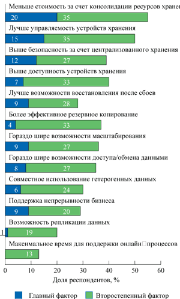

Елена Покатаева
Сегодня мир находится в состоянии, называемом информационным взрывом. По подсчетам науковедов, с начала нашей эры для удвоения знаний человечеству потребовалось 1750 лет, второе удвоение произошло в 1900 г., а третье - к 1950 г., т. е. всего за 50 лет. Стремительные темпы накопления информации стимулируют непрерывный процесс совершенствования информационных систем (ИС), помогающих человеку справиться с информационными перегрузками. Наступление нового тысячелетия обозначило переход к новому этапу в развитии ИС.
Инфраструктура информационного общества - цена вопроса
Период экстенсивного развития ИТ-систем завершился. Главной его задачей была всеобъемлющая информатизация деятельности предприятий и организаций, главным инструментом ее решения - интеграция приложений вплоть до уровня управления корпоративными ресурсами и межкорпоративными взаимодействиями. Интеграция давалась нелегко: приобретались новые мощные серверы, кластерные системы, высокопроизводительное сетевое оборудование. Вкладывались средства в новое мощное и дорогое ПО, способное поддерживать совместную работу многих приложений. Немалых затрат потребовал и перенос данных из унаследованных систем (legacy systems).
Корпоративные данные становились поистине золотыми в прямом и переносном смысле: велики затраты на создание современной информационной системы, но еще больше потери в случае ее сбоя. Риск безвозвратной утраты важных корпоративных данных увеличивается многократно с ростом сложности информационной системы. Найти причину сбоя в ней практически невозможно, и перезагрузить ERP-систему, как автономный ПК, тоже нельзя. Последовали новые затраты на системы архивирования и резервного копирования, отказоустойчивые решения, системы восстановления после сбоев в горячем режиме и т. п. Образовался устойчивый спрос на системы мониторинга и управления ИТ-инфраструктурой. Потоки новых данных, порождаемых этими системами, которые поступают в реальном масштабе времени, нужно также хранить, защищать от сбоев, быстро обрабатывать.
Главной проблемой этапа экстенсивного развития стала эффективность вложений в развивающуюся инфраструктуру ИТ, оценка возврата инвестиций (Return On Investment, ROI). Поиск решения этой проблемы стал отправной точкой для взлета бизнеса разнообразных консалтинговых компаний, предоставляющих услуги ИТ- и бизнес-консультирования - с целью улучшения бизнес-процессов на основе современных технологий, ИТ-аудита - чтобы получить контроль за состоянием своей ИТ-инфраструктуры и шанс сделать ее управляемой. Главным оружием консультантов стало умение представить ИТ-инфраструктуру в виде логичной системы и реально оценить стоимость ее поддержки, развития, модернизации.
Человечество, вступающее в информационную эру, начало осознавать, какую цену придется заплатить за цифровое равенство и право жить в обществе, в котором главной ценностью становятся не материальные блага, а человеческий интеллект. Эта цена определяется стоимостью всей глобальной инфокоммуникационной инфраструктуры, которая должна быть одновременно и универсальной - чтобы обеспечивать единый фундамент мировых инфокоммуникаций, и интеллектуальной - чтобы адаптироваться к изменяющимся потребностям клиентов, и надежной - чтобы гарантировать неизменное качество ИТ-услуг вне зависимости от того, в какой географической точке в данный момент находится потребитель.
Сегодня даже домашним пользователям, не говоря уже о корпоративных, требуются решения, обеспечивающие полную интеграцию различных сервисов (телефония, передача данных, видео, охранные системы и видеонаблюдение, запуск корпоративных приложений, видеоконференц-связь), желательно от одного поставщика услуг и так, чтобы для настройки персональной (корпоративной или домашней) информационной среды не требовались специальные инженерные усилия, более того - чтобы это можно было делать самостоятельно (self-serving).
Основные производители оборудования для информационных систем направили свои усилия на разработку продуктов для создания современной ИТ-инфраструктуры такого типа. Концепция компании Hewlett-Packard (http://www.hp.com), к примеру, так и называется - Adaptive Infrastructure (адаптивная инфраструктура), что подчеркивает ее стратегическую нацеленность на универсальность и способность оптимизировать ресурсы ИТ-инфраструктуры в зависимости от специфики предоставляемых ИТ-услуг. Концепция компании IBM (http://www.ibm.com) носит столь же выразительное название - On Demand, акцентируя внимание на готовности ИТ-инфраструктуры перераспределять ресурсы в зависимости от запросов пользователей ИС.
Сегодня настал период интенсивного развития ИС. Его ключевой признак - централизованное управление всеми разнообразными ИТ-ресурсами, непрерывный мониторинг и оптимизация на всех этапах (хранение, доступ, штатная обработка, автоматическое реагирование на нештатные ситуации и т. п.).
Логично, что символом нового этапа стало появление на заре нового тысячелетия концепции Utility Computing (UC), подразумевающей отношение к данным, наполняющим жизнью информационные системы, как к централизованно управляемым универсальным ИТ-ресурсам, - подобно тому, как мы пользуемся коммунальными услугами (вода, газ, тепло, электричество и т. д.), не задумываясь о различиях в технологиях добычи, обработки и доставки этих ресурсов в наш дом. Как считает Гэри Блум (Gary Bloom), президент компании Veritas Software (http://www.veritas.com), провозгласившей концепцию UC стратегическим направлением своего развития, Utility Computing - это новая (третья по счету) парадигма построения инфраструктуры ИТ-мира, сменившая персональный компьютер и мэйнфреймы.
Безусловно, единый подход к серверным мощностям, устройствам хранения, настольным сервисам и приложениям как к универсальным ресурсам показался ИТ-сообществу привлекательной, математически красивой идеей. Потенциальные клиенты - ИТ-директора предприятий высоко оценили возможную экономическую выгоду от максимального использования имеющихся ресурсов, бесперебойной доступности предоставляемых вычислительных услуг, автоматического управления ИТ-инфраструктурой, самостоятельно адаптирующейся к изменениям нагрузки. Поставщики оборудования и ПО восприняли идею UC с энтузиазмом, увидев в новой концепции широкие возможности для продвижения своих решений на рынке.
Utility Computing: ожидания и опасения
Utility Computing - это название только одной из целого букета концепций, основанных на схожих идеях. Так, в литературе встречаются описания технологий и продуктов класса Enterprise Information Integration (EII, интеграция корпоративной информации). Это название подчеркивает интеграционную сущность подхода к управлению корпоративными информационными ресурсами. EII - это техника агрегирования различных элементов данных, чаще всего применяемая в операциях кэширования и доступа к данным. Она подразумевает, что реальные данные сохраняются отдельно от их образов, участвующих в операциях. Обычно такие решения создаются на основе механизмов управления метаданными, обеспечивающих полноту и целостность всего множества исходных данных. Технологии EII следует отличать от корпоративных хранилищ данных (data warehouses), поскольку они предназначены для интеграции данных, поступающих в систему в различных форматах, с целью решения специфических проблем управления информацией.
В сфере хранения данных возникла концепция Storage Grid, которая предполагает автоматическое распределение данных по корпоративным ресурсам хранения и централизованное управление ими. В основу концепции Storage Grid положены технологии виртуализации серверного уровня инфраструктуры хранения данных, которые применяют все основные поставщики серверов (IBM, HP, Sun). Данный тип виртуализации предполагает, что любое приложение может получить доступ к нужным данным, независимо от их физического расположения. В то же время на физическом уровне данные размещаются таким образом, чтобы максимально эффективно использовать доступную емкость устройства хранения.
Слово "Grid" использует в названии своей концепции и компания Oracle. Oracle Grid - это технология, позволяющая приложениям работать с логически единой базой данных, которая физически может находиться даже на территориально разнесенных площадках.
Российский рынок ИТ-услугВ целом объем российского рынка ИТ-услуг составляет 755 млн долл., и в ближайшее время, как ожидается, эта цифра будет стремительно расти. Самый крупный и динамичный сегмент рынка ИТ-услуг - услуги системной интеграции; объем этого сегмента оценивается примерно в 330 млн долл. (43%). Объем сегмента обслуживания и технической поддержки составляет 230 млн долл. (31%). На сегмент Интернет-услуг (создание контента, дизайн и технологии, электронная коммерция, а также реклама и маркетинг) приходится 26% (105 млн долл.) от общего "пирога". Сегмент услуг консультирования - самый малый, его объем составляет 90 млн долл. (12%). Среди всех инфокоммуникационных услуг подотрасль ИТ-услуг развивается наиболее динамично - в 2002 г. она выросла на треть, и, судя по прогнозам, такие темпы роста сохранятся. Источник: исследование, проведенное издательским домом "Компьютерра" по заказу Минэкономразвития РФ в рамках Федеральной целевой программы "Электронная Россия", октябрь 2003 г.
|
Президент консалтинговой компании Hurwitz & Associates Юдит Гурвиц предсказывала, что в 2003 г. американские компании потратят на приобретение инфраструктурного оборудования, ПО управления ИТ-ресурсами и другие сервисы, помогающие создать на предприятии UC-среду, около 12,3 млрд долл. В своем аналитическом исследовании Adopting an Information Integration Strategy, опубликованном в июне нынешнего года, г-жа Гурвиц отмечает: "Сообщения о появлении новых продуктов класса EII появляются чуть ли не каждый день. Некоторые из поставщиков специализируются исключительно на продуктах интеграции, другие разрабатывают их как часть более широкого спектра продукции".
Почему этот сектор рынка вдруг показался таким перспективным производителям оборудования и ПО? "Производители, которые держат руку на пульсе рынка, пытаются помочь руководителям ИТ-подразделений, когда те тонут в океане окруживших их разнородных, несовместимых друг с другом корпоративных данных, мечтая подчинить их своему контролю", - объясняет Юдит Гурвиц. В то же время она замечает: "Соглашаясь с тем, что utility computing - это хорошая модель, помогающая планировать эффективные вложения средств в наращивание серверных мощностей, устройств хранения, приложения для ПК, все же немногие компании согласятся пойти на риск новых приобретений с неапробированными ценовыми схемами и в условиях нестабильной экономики".
"Utility computing - это скорее обещание, чем реальность. Конечно, предприятия осознают стоящие перед ними проблемы в области управления ИТ-инфраструктурой. Однако не думаю, что реальные внедрения начнутся ранее, чем через 5-6 лет, - такой пессимистичный прогноз дает Клинт Бултон (Clint Boulton), аналитик независимого профессионального Интернет-ресурса http://www.internetnews.com. - Главная проблема заключается в том, что полномасштабное внедрение концепции UC требует серьезного апгрейда всей ИТ-инфраструктуры". Усугубляет ситуацию и тот факт, что практически все решения, присутствующие на рынке, тесно связаны с оборудованием или ПО конкретных производителей, и тенденции развития ИТ-мира вступают в жесткое противоречие с "вендорно-ориентированными" программно-аппаратными решениями.
Принципиальная гетерогенность информационного мира
Информационные системы вышли за стены предприятий. Появляются многоуровневые вертикальные информационные структуры даже уровня государства. Внедрение средств электронной торговли, электронных удостоверений личности, электронных систем взаимодействия граждан с государственными органами приводит к тому, что пользователями этих гигантских ИС становится все население страны. Отдельные информационные системы уже не могут существовать изолированно - потребности информатизированного общества заставляют их взаимодействовать, поставляя друг другу данные, необходимые для полноценного функционирования любой из этих систем. В такой структуре непрерывно взаимодействующих разнообразных ИС каждая из них становится критически важным звеном, ибо от ее работоспособности зависит работоспособность многих других систем. А ведь каждая система - плод работы отдельной группы специалистов, выбравшей определенного поставщика серверов и настольных компьютеров, сетевого оборудования, устройств хранения, СУБД, приложений и т. д.
Базовое свойство нового этапа развития ИС - гетерогенность информационной инфраструктуры, обеспечивающей передачу данных между всеми взаимодействующими вертикальными и горизонтальными системами. Гетерогенность ИТ-инфраструктуры - это не ошибка ИТ-директора, нуждающаяся в исправлении, а объективное свойство мира, основанного на информационных технологиях.
Находясь в состоянии перманентного бурного развития, инфокоммуникационные технологии постоянно создают новые возможности и формы реализации информационных взаимодействий. Человек становится все более мобильным, а его рабочее место - все более виртуальным. Бизнес-процессы переносятся в сферу обмена электронными документами по сетям электронных коммуникаций. "Подход к проектированию приложений корпоративного уровня в последние годы кардинально изменился. Стремительно уходят в прошлое громоздкие монолитные структуры. Им на смену пришли гибкие и легко перестраиваемые сервис-ориентированные архитектуры и событийно-ориентированные модели управления. Появляется новая инфраструктура ИТ, которая должна комбинировать устоявшиеся подходы с новыми парадигмами, такими, как Web-сервисы, мобильные и беспроводные вычисления, В2В-интеграция, event management", - отмечает Массимо Пеззини (Massimo Pezzini), аналитик компании Gartner. Новые сервисы, подобные перечисленным, - это приметы нового стиля организации бизнеса. Все они опираются на технологические достижения различных компаний, достигших успеха в определенных секторах информатизации бизнеса.
Фактически признание гетерогенной природы ИТ-мира означает слом устоявшихся представлений о правилах грамотного построения ИТ-систем, в основе которого лежал выбор одного генерального поставщика, способного предложить всеобъемлющую архитектуру всей ИТ-инфраструктуры предприятия. Похоже, что сама жизнь завершает ожесточенные споры о том, какой выбор правильнее: один поставщик ИТ или множество поставщиков лучших в своих классах продуктов (best-of-breed).
В рамках новой парадигмы следует обсуждать новый вопрос: как заставить работать вместе продукты разных производителей, лучшие в своих классах? Собственно, в этом и состоит сегодня главный вопрос, определяющий возможность реального внедрения концепции Utility Computing.
Цена ответственности - цена интеграции
Гетерогенность сложных информационных систем влечет за собой несколько неприятных последствий. Во-первых, очень быстро нарастает сложность контроля за взаимодействием всевозможных "заплаток"-патчей, версий ПО и т. д. - груз накопленных апгрейдов и апдейтов превращается в непосильную ношу. Во-вторых, когда ИС представляет собой нагромождение патчей, кто-то должен нести ответственность за работоспособность прикладных бизнес-систем. Производители оборудования и ПО берут на себя ответственность за функционирование только собственных разработок или сертифицированных решений компаний-партнеров.
В случае с гетерогенной системой, отягощенной разномастными патчами, руководитель ИТ-службы напоминает героя древнекитайской поговорки: "Носорог, глядящий на луну, даром тратит цветы своей селезенки". Он оказывается между двух огней. С одной стороны, пользователи требуют: больше! больше! больше - скорости, возможностей и т. д. С другой стороны, совет директоров требует: меньше! меньше! меньше - денег, ресурсов, необходимости принимать административные решения и т. п. При этом все должно работать без перебоев и активно задействовать те возможности, которые обещают лучшие технологии, уже заложенные в закупленной продукции: серверах, СУБД, приложениях и т. п.
Высокая предсказуемость - вот что на самом деле нужно ИТ-директору в этой ситуации, чтобы подняться на требуемый уровень ответственности. Он сможет принять правильное решение только тогда, когда будет очень хорошо владеть ситуацией, т. е. иметь подробную информацию о том, что происходит в его ИТ-инфраструктуре, что есть сейчас, что и в каких размерах понадобится завтра или послезавтра. Тогда действительно можно получить новое ценное качество за меньшие деньги - что, собственно, и требуется.
ИТ-директор может рассчитывать на помощь из различных источников. Во-первых, системные интеграторы, специализирующиеся на проектах в различных отраслях деятельности, могут провести обследование ИТ-инфраструктуры заказчика вплоть до замера времени отклика приложений, выявить узкие места, дать квалифицированный совет по устранению узких мест и созданию резерва ресурсов для будущего развития.
Производители оборудования и ПО, со своей стороны, могут предложить не универсальный продукт, а специализированное решение, изначально настроенное на определенный типовой бизнес-профиль предприятия (крупный телекоммуникационный оператор, многофилиальная территориально распределенная финансовая структура, нефтегазодобывающее предприятие и т. п.).
Кроме того, имеется гипотетическая возможность передать часть функций ИТ-отдела, связанных с поддержкой ИТ-инфраструктуры и предоставлением ИТ-услуг, внешней организации на условиях аутсорсинга, и попытаться сэкономить на фонде заработной платы ИТ-отдела.
К сожалению, все эти варианты ориентированы на поддержку технических решений ограниченного круга поставщиков. В силу этого главная проблема реализации концепции UC формулируется следующим образом: как совместить объективную гетерогенность постоянно развивающихся ИС с жесткими ограничениями по совместимости программно-аппаратных средств от разных производителей, диктуемых условиями рыночной конкуренции?
Теоретический ответ аналитики уже сформулировали. "В связи с эволюцией ИТ-инфраструктур ИТ-администраторам понадобятся ПО и механизмы сетевой интеграции, позволяющие быстро выявлять и разрешать проблемы, а также снижать административные и эксплуатационные затраты", - заявляет Фред Бруссар (Fred Broussard), старший аналитик-исследователь компании IDC. Его поддерживает Рой Шаттл (Roy Schuttle) из компании Gartner: "Интеграция - это то, что жизненно необходимо предприятиям для поддержки современных бизнес-стратегий, и то, что реально непросто выполнить". Непросто, но возможно - об этом говорят факты.
Путь к успешной интеграции
ИТ-индустрия уже сделала основные шаги, обеспечивающие практическую реализуемость универсальной концепции Utility Computing.
Готовность к принятию современных аппаратных решений
Оборудование становится все более производительным, устройства хранения - более емкими. Стоимость оборудования все время снижается. Как следствие, растет готовность корпоративных потребителей массово применять передовые технические ИТ-решения.
Летом 2003 г. компания International Network Services (INS) опубликовала результаты своего глобального исследования на тему о том, насколько корпоративные потребители готовы внедрять современные технологии хранения данных. В нем приняли участие ИТ-директора, технические специалисты, консультанты, работающие в разных компаниях, странах и сферах бизнеса.
Оказалось, что быстрыми темпами растет число компаний, желающих использовать сети хранения данных, т. е. технологии, позволяющие управлять данными, хранимыми на централизованных серверах. Если в 2001-2002 гг. этот рост составлял приблизительно 30% в год, то в 2003 г. прогнозировался рост на уровне 36%. При этом доля участников опроса, ожидающих скорость роста на уровне 10% и меньше, уменьшилась по сравнению с предыдущими годами до 21%, а доля тех, кто ожидает роста на уровне 51-100%, - увеличилась до 20% (рис. 1). Респонденты отмечали, что причиной их интереса к данным технологиям стала возможность сделать свою ИТ-инфраструктуру более управляемой, в частности, за счет оптимизации ресурсов и контроля доступа к данным, повышающего безопасность информационных активов компании.
Исследователи также поинтересовались у респондентов, что они считают главной причиной, приведшей к такому состоянию корпоративных данных, что потребовалось принятие срочных мер для улучшения управляемости. Наибольшее количество участников исследования поставило на первое место слишком высокую загрузку системных ресурсов обработкой данных (рис. 2).
| Рис. 1. Прогноз темпов роста средств централизованного хранения данных (по оценкам компаний). Источник: International Network Services, июль 2003 г. |
Рис. 2. Главная причина возникновения проблем с корпоративными данными (по оценкам компаний). Источник: International Network Services, июль 2003 г. |
Вне зависимости от степени текущей решимости компаний использовать передовые технологии управляемого хранения данных, 90% из них считают наличие развитых сетевых возможностей хранения очень важным элементом своей ИТ-инфраструктуры, поскольку - в этом большинство респондентов единодушны - это означает экономию затрат и более удобную рабочую среду для ИТ-персонала. Какие еще преимущества сетей хранения данных играют роль для компаний, видно из рис. 3.
|  | Рис. 3. Почему важны сети хранения данных (по оценкам компаний). Источник: International Network Services, июль 2003 г. |
Технологические концепции реализации UC
В триаде, составляющей основу ИС, - аппаратное обеспечение, ПО, данные, - на новом этапе развития ИТ-инфраструктуры главенствующую роль играют данные.
Данные - это главное содержимое ИС и ее главная ценность, то, что нуждается в защите, оптимизации и эффективном управлении. Поэтому именно в сфере хранения данных появились всеобъемлющие концепции системной защиты данных, сводящие прагматическую идею защиты бизнеса к технически-организационной задаче защиты данных, предполагающей:
- надежное хранение, включая резервирование, восстановление после сбоев и т. п.;
- актуальность и доступность данных в тот момент, когда это требуется;
- синхронизацию данных с другими системами.
Компании о резервном копированииСогласно данным исследований, проведенных компанией Gartner, большинство американских предприятий из сферы малого и среднего бизнеса ощущают себя защищенными, поскольку у них организовано резервное копирование серверных систем. В то же время 40% из них вообще не применяют резервного копирования данных, хранящихся на настольных системах или в удаленных офисах. Даже осознавая ценность этих данных, они объясняют, что у небольшой компании нет для этого ресурсов.
|
"Постоянная доступность приложений делает вашу ИТ-инфраструктуру средством повышения конкурентоспособности, - поясняет Василий Лиховайдо, директор по продажам в России и странах СНГ компании Veritas. - Ваш бизнес развивается эффективно, ваша сеть работает без сбоев, уровень обслуживания клиентов остается высоким, а простои уходят в прошлое".
Такой подход представляется весьма плодотворным, поскольку подсистемы информационной безопасности и управления охватывают все уровни ИТ-инфраструктуры, и единый принцип их проектирования позволяет достичь требуемого бизнесом уровня безопасности и управляемости. Появление у поставщиков систем хранения данных конкретных коммерческих продуктов, создаваемых на базе данного подхода, означает, что они апробируют собственные варианты реализации концепции Utility Computing. "IBM и HP фокусируют внимание на инфраструктурных решениях, занимаются вопросами управляемости сервисов, реализуемых на базе этого оборудования, - комментирует Джон Мэдден (John Madden), аналитик компании Summit Strategies. - Oracle создает распределяемое ПО (grid). Sun совершенствует технологии виртуализации аппаратных ресурсов".
Согласованные действия поставщиков
В феврале 2004 г. авторитетная международная организация Distributed Management Task Force (DMTF) объявила о создании рабочей группы Utility Computing, сопредседателями которой стали представители компаний IBM и Veritas. "Развитие оборудования стимулирует развитие возможностей ИТ. Но именно ПО остается тем ключом, который открывает сокровищницу возможностей ИТ для пользователей", - прокомментировал этот факт Гэри Блум, президент Veritas. Участники рабочей группы, в которую вошли, в частности, компании Cisco Systems, EMC, HP, Oracle, Sun Microsystems, поставили перед собой задачу разработать единые модели взаимодействия объектов для формализации сервисов Utility Computing на базе общей модели Common Information Model, предложенной DMTF.
Новая рабочая группа заявила о намерении тесно сотрудничать с другими техническими комитетами и форумами, такими, как Global Grid Forum (GGF), Organization for the Advancement of Structured Information Standards (OASIS), Web Services Distributed Management (WSDM), для того, чтобы разработать унифицированные подходы, облегчающие взаимодействие программно-аппаратных решений различных производителей в рамках концепции Utility Computing. Заявлены даже амбициозные планы - разработать уже в этом году прототип стандарта UC.
Помимо рабочей группы DMTF, аналогичные действия предпринимает и другая группа поставщиков решений, которую в прошлом году создали компании EDS, Computer Associates, Opsware. Эти производители ПО возглавили работы по унификации решений UC на базе языка DCML (Data Center Markup Language). Альянс поддержали более 50 компаний, которые совместно занимаются разработкой универсального языка взаимодействия между гетерогенными компонентами центров обработки данных. Фактически вступая в конкуренцию с рабочей группой DMTF, участники этого объединения также рассчитывают на то, что разрабатываемый ими универсальный язык будет принят в качестве стандарта для обмена информацией в рамках UC.
Не формальная стандартизация, а практическое упрощение интеграции
Несмотря на все усилия по стандартизации, поставщики оборудования обречены оставаться заложниками своих частных архитектур и уникальных особенностей оборудования, которые, собственно говоря, создают неповторимый облик продукции компании и служат фундаментом ее коммерческого успеха (даже если они выбирают дорогостоящий путь приобретения других компаний и расширения бизнес-направлений).
По оценкам российских консультантов, в любом проекте интеграции приложений до 90% успеха определяется эффективностью наложения проектной деятельности на бизнес-процессы, т. е. относится к сфере, вообще говоря, далекой от технологий. Производитель ориентируется на некоторое идеальное предприятие, а реальный бизнес всегда уникален. Поэтому никакое готовое приложение, даже с предварительными настройками, не будет идеально подходить к реальной ИТ-среде предприятия. По той же причине специально сконструированные стандартные языки обмена данными между гетерогенными узлами инфраструктуры смогут лишь обеспечить такой обмен, но никак не оптимизировать работу всей системы.
Компания Veritas избрала принципиально иной подход. Отказавшись от поддержки любых фирменных архитектур и моделей, она полностью сосредоточилась на задаче комплексной интеграции продуктов разных поставщиков: на уровне устройств хранения, серверных систем, приложений. Свою концепцию построения ИТ-инфраструктуры предприятия компания относит к категории Utility Computing, подразумевая комплексный подход к защите корпоративных данных: обеспечение высокой надежности (готовности), производительности и автоматизированного управления ресурсами.
Ключом к практическому решению интеграционной головоломки стали партнерские отношения, устанавливаемые Veritas Software с производителями аппаратного и программного обеспечения. Сегодня в списке таких партнеров более сотни компаний - основных поставщиков серверов, систем хранения и операционных систем. Ставка на тесные партнерские связи в области технологий и бизнеса сделала риск оригинального подхода к технологической интеграции оправданным. Сегодня, по данным Gartner (2002 г.) и IDC (2003 г.), Veritas Software занимает 40% мирового рынка продуктов для резервирования и восстановления данных, 68% рынка ПО для файловых систем, 69% мирового рынка управления томами/виртуализации дискового пространства.
Путь интеграции, который выбрала Veritas, нельзя назвать простым. Правильнее будет сказать, что компания находится в начале этого пути. Еще предстоит огромная работа, например, по обеспечению миграции приложений между серверами различных производителей, работающими под управлением различных операционных систем. Но для прогнозирования будущих путей создания ИТ-инфраструктуры нового поколения крайне важны позитивные результаты любых инноваций. В данном случае сегодня уже можно говорить о том, что, во-первых, есть принципиальная возможность интеграции данных, получаемых от устройств и ПО практически любых производителей. Во-вторых, полномасштабный переход к концепции Utility Computing может быть эволюционным процессом постепенной интеграции в зависимости от конкретного набора решений, поскольку выбранный подход обусловливает модульный принцип модернизации ИС. В-третьих, поэтапная модернизация ИС дает возможность не отказываться от эксплуатации унаследованных систем (legacy systems). И наконец, поскольку интеграция происходит в рамках концепции Utility Computing, оптимизируется использование ресурсов ИС и обеспечивается их непрерывная адаптация к текущим потребностям ИТ-услуг.
***
Рынок, открытый для свободной конкуренции, не только связывает людей и компании информационными нитями, окутывая ими всю планету, но и превращает конкурентов в партнеров. Правда, сегодня для этого нужны компании-посредники, избравшие тотальную совместимость и интегрируемость своим жизненным кредо. Тогда системная интеграция в гетерогенных системах любой сложности превращается из высокого искусства в добротное ремесло, востребованное всеми.
Не каждый мечтает об эксклюзивном авто, но почти никто не откажется от надежного и недорогого, современного и удобного средства передвижения. Далеко не каждое предприятие готово инвестировать серьезные средства в полномасштабный апгрейд своей ИТ-инфраструктуры и оценку ROI, выполненную дорогостоящими консультантами. Но почти никто не откажется от возможности получить детальный контроль над функционированием своей информационной системы, включая рекомендации по постепенной модернизации для поддержки будущего развития.